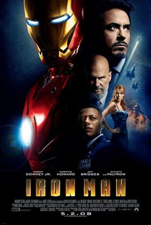
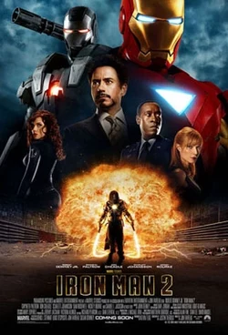
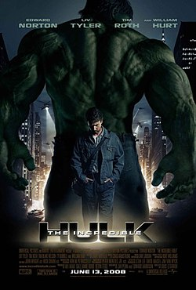
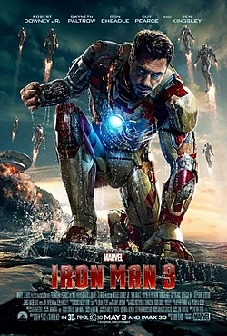
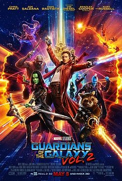
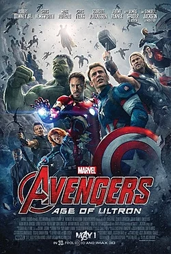
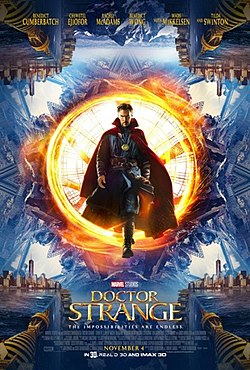
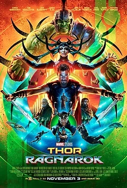
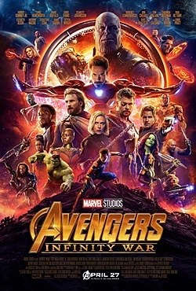
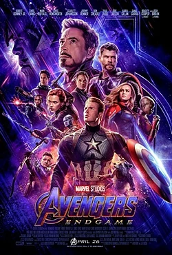

Universo Cinematográfico da Marvel (UCM)
Todos os nossos filmes estão acontecem no mesmo universo, nessa página você irá conferir toda a nossa saga no cinema em ordem cronológica!

Capitão América: O Primeiro Vingador
1945
Steve Rogers é um jovem que participa de experiências visando a criação do supersoldado americano. Quando os oficiais militares conseguem transformá-lo em uma arma humana, eles percebem que não podem arriscar a vida do jovem nas batalhas de guerra. O filme, embora comece sua história com a descoberta do corpo congelado do Capitão América em 2011, grande parte de sua história se passa durante a década de 1940, durante a Segunda Guerra Mundial. É também a primeira aparição do Tesseract, a Joia do Espaço.
.jpg)
Capitã Marvel
1995
A Capitã Marvel se envolve em uma guerra galáctica entre duas raças alienígenas.
Homem de Ferro
2010
Tony Stark é um industrial bilionário e inventor brilhante que realiza testes bélicos no exterior, mas é sequestrado por terroristas que o forçam a construir uma arma devastadora. Em vez disso, ele constrói uma armadura blindada e enfrenta seus sequestradores. Ao voltar para os EUA, Stark aprimora a armadura e a utiliza para combater o crime.O filme que deu início a todo Universo Cinematográfico da Marvel (UCM). A princípio, Homem de Ferro parecia ser apenas mais um filme de herói como muitos antes dele (ex.: Homem-Aranha, X-Men, Quarteto Fantástico), como se fosse o único super-herói de seu mundo. Contudo, o filme surpreendeu todos os fãs de quadrinho com sua cena pós-créditos na qual Nick Fury revela sobre a Iniciativa Vingadores.
Homem de Ferro 2
2011
Em um mundo ciente da existência do Homem de Ferro, o inventor bilionário Tony Stark sofre pressão de todos os lados para compartilhar sua tecnologia com as forças armadas. Ele resiste para divulgar os segredos de sua inigualável armadura, com medo de que estas informações caiam nas mãos erradas. Com a bela Pepper Potts e o amigo "Rhodey" Rhodes ao seu lado, Tony precisa forjar novas alianças e confrontar um inimigo poderoso. Na sequência do filme do Homem de Ferro, o Universo Cinematográfico da Marvel não apenas apresenta uma nova aventura do Stark, como também aproveita para apresentar novos heróis que irão compor os Vingadores no futuro. Como é o caso da Viúva Negra e de James Rhodes como o Máquina de Combate.
O Incrivel Hulk
2011
O cientista Bruce Banner se esconde no Brasil enquanto busca desesperadamente a cura da mutação que o transforma em um monstro incontrolável. Só assim ele poderá novamente levar uma vida normal e ficar ao lado da mulher que ama. Porém, durante este processo, ele tem que lutar contra um novo inimigo que quer capturá-lo, conhecido como "O Abominável".Outro filme de super-herói que parecia ser como os outros antes dele. No entanto, foi nesse filme que Marvel começou a mostrar que o universo de seus heróis estava conectado. Na cena pós créditos de O Incrível Hulk, vemos Tony Stark (cujo filme havia sido lançado apenas há alguns meses) conversando diretamente com o General Ross. Isso sem falar nas diversas referências ao Capitão América.

Thor
2011
Como filho de Odin, rei dos deuses nórdicos, Thor logo herdará o trono de Asgard de seu idoso pai. Porém, no dia de sua coroação, Thor reage com brutalidade quando os inimigos dos deuses entram no palácio violando o tratado. Como punição, Odin manda Thor para a Terra. Enquanto seu irmão Loki conspira em Asgard, Thor, agora sem seus poderes, enfrenta sua maior ameaça.Nesse filme nós começamos a explorar os conceitos de super-heróis cósmicos, mostrando outros planetas e raças que compõem o nosso universo. Porém, fora isso, foi apenas um filme de origem.

Os Vingadores
2012
Loki, o irmão de Thor, ganha acesso ao poder ilimitado do cubo cósmico ao roubá-lo de dentro das instalações da S.H.I.E.L.D. Nick Fury, o diretor desta agência internacional que mantém a paz, logo reúne os únicos super-heróis que serão capazes de defender a Terra de ameaças sem precedentes. Homem de Ferro, Capitão América, Hulk, Thor, Viúva Negra e Gavião Arqueiro formam o time dos sonhos de Fury, mas eles precisam aprender a colocar os egos de lado e agir como um grupo em prol da humanidade.Filme que encerrou a nossa primeira fase no cinema, culminando na união dos super-heróis apresentados nos filmes anteriores. O filme marca também a primeira aparição da Joia da Mente e do vilão Thanos, que se manteria como uma força escondida nas sombras por mais seis anos.
Homem de Ferro 3
2012
Depois de um inimigo reduzir o mundo de Tony Stark a destroços, o Homem de Ferro precisa aprender a confiar em seus instintos para proteger aqueles que ama, especialmente sua namorada, e lutar contra seu maior medo: o fracasso.Assim que como Homem de Ferro dei início à nossa primeira fase no cinema, o terceiro filme desse herói foi o escolhido para dar início à Segunda Fase.

Thor: O Mundo Sombrio
2013
Thor precisa contar com a ajuda de seus companheiros e até de seu traiçoeiro irmão Loki em um plano audacioso para salvar o universo. Entretanto, os caminhos de Thor se cruzam com Jane Foster e, dessa vez, a vida dela está realmente em perigo.Mais uma sequência de um filme da Primeira Fase. O ponto mais chamativo desse filme é que foi a primeira aparição da Joia da Realidade.

Capitão América: O Soldado Invernal
2014
Após os eventos catastróficos em Nova York com Os Vingadores, Steve Rogers, também conhecido como Capitão América, segue tentando se ajustar ao mundo moderno. Porém, quando um colega da agência S.H.I.E.L.D. é atacado, Steve se vê preso em uma rede de intrigas que ameaça colocar o mundo em risco. Em parceria com a Viúva Negra e Falcão, seu novo aliado, o Capitão América tem que enfrentar um misterioso e inesperado inimigo, o Soldado Invernal.Novamente é na cena dos créditos que o filme prepara o terreno para as futuras produções da Marvel. Descobrimos neste filme que a Hydra está fazendo experimentos com a Joia da Mente para conferir superpoderes a seres humanos, e temos a apresentação de Wanda e Pietro Maximoff.

Guardiões Da Galáxia
2014
O aventureiro do espaço Peter Quill torna-se presa de caçadores de recompensas depois que rouba a esfera de um vilão traiçoeiro, Ronan. Para escapar do perigo, ele faz uma aliança com um grupo de quatro extraterrestres. Quando Quill descobre que a esfera roubada possui um poder capaz de mudar os rumos do universo, ele e seu grupo deverão proteger o objeto para salvar o futuro da galáxia.O filme que verdadeiramente expandiu o Universo Marvel. Descobrimos mais sobre a vida pelo universo e sobre o vilão Thanos. Também é neste filme que a Joia do Poder aparece pela primeira vez.
Guardiões Da Galáxia Vol.2
2014
Os Guardiões precisam lutar para manter sua recém descoberta família unida, enquanto descobrem os mistérios sobre o verdadeiro pai de Peter Quill.Apesar da sequência de Guardiões da Galáxia ter estreado apenas três anos mais tarde, a história do Vol. 2 se passa apenas alguns meses após os eventos do primeiro filme. Cronologicamente, o filme acontece antes mesmo de Vingadores: Era de Ultron
Vingadores: Era de Ultron
2015
Ao tentar proteger o planeta de ameaças, Tony Stark constrói um sistema de inteligência artificial que cuidaria da paz mundial. O projeto acaba dando errado e gera o nascimento do Ultron. Com o destino da Terra em jogo, Capitão América, Homem de Ferro, Thor, Hulk, Viúva Negra e Gavião Arqueiro terão que se unir para mais uma vez salvar a raça humana da extinção.Filme que realmente revela que a pedra que adornava o cetro utilizado por Loki no primeiro filme dos Vingadores era uma Joia do Infinito. Novamente o filme dos Vingadores marca a transição de fases do UCM, encerrando a nossa Segunda Fase no cinema.

Homem Formiga
2015
Forçado a sair de sua própria empresa, Dr. Hank Pym transforma um talentoso ladrão em Homem-Formiga para impedir que seu antigo pupilo consiga replicar a fórmula da roupa que dá o poder do encolhimento, força sobre-humana e a capacidade de controlar um exército de formigas.Nesse filme, nós ampliamos ainda mais a atuação dos super-heróis, mostrando que eles existem há vários anos, preenchendo o espaço de tempo entre Capitão América e o Homem de Ferro. No caso era Hank Pym e sua esposa Janet, o Homem- Formiga e a Vespa originais, que atuaram nos anos 1980, durante a Guerra Fria. A história principal do filme se passa em 2015, quando Scott Lang assume o manto de Homem-Formiga.

Capitão América: Guerra Civil
2016
O ataque de Ultron faz com que os políticos decidam controlar os Vingadores, já que seus atos afetam toda a humanidade. Tal decisão coloca o Capitão América em rota de colisão com o Homem de Ferro.Filme considerado o Vingadores 2.5 pela quantidade de super-heróis que ele traz. Foi aqui que começaram as desavenças entre Homem de Ferro e Capitão América que repercutiriam até Vingadores: Guerra Infinita.

Homem Aranha: De Volta ao Lar
2016
Depois de atuar ao lado dos Vingadores, chegou a hora do pequeno Peter Parker voltar para casa e para a sua vida, já não mais tão normal. Lutando diariamente contra pequenos crimes nas redondezas, ele pensa ter encontrado a missão de sua vida quando o terrível vilão Abutre surge amedrontando a cidade. O problema é que a tarefa não será tão fácil como ele imaginava.
Doutor Estranho
2017
Após sua carreira ser destruída, um brilhante, porém arrogante, cirurgião ganha uma nova chance em sua vida quando um feiticeiro o treina para se tornar o Mago Supremo. Doutor Estranho chegou ao Universo Cinematográfico da Marvel para expandir ainda mais os seus limites. Pode-se dizer que ele chegou para abrir as portas da percepção de seus expectadores, aprofundando ainda mais os conceitos sobre magia desse universo. Ainda de quebra, esse filme conta com a primeira aparição da Joia do Tempo.
.jpg)
Pantera Negra
2017
Conheça a história de T'Challa, príncipe do reino de Wakanda, que perde o seu pai e viaja para os Estados Unidos, onde tem contato com os Vingadores. Entre as suas habilidades estão a velocidade, inteligência e os sentidos apurados.Como pode ser percebido pelo filme, a história de Pantera Negra se passa pouco tempo após a morte do Rei T'Chaka, que aconteceu em Guerra Civil.
Thor: Ragnarok
2017
Thor está preso do outro lado do universo. Ele precisa correr contra o tempo para voltar a Asgard e parar Ragnarok, a destruição de seu mundo, que está nas mãos da poderosa e implacável vilã Hela.

Homem Formiga e a Vespa
2017
Scott Lang lida com as consequências de suas escolhas tanto como super-herói quanto como pai. Enquanto tenta reequilibrar sua vida com suas responsabilidades como o Homem-Formiga, ele é confrontado por Hope van Dyne e Dr. Hank Pym com uma nova missão urgente. Scott deve mais uma vez vestir o uniforme e aprender a lutar ao lado da Vespa, trabalhando em conjunto para descobrir segredos do passado.
Vingadores Guerra Infinita
2017
Homem de Ferro, Thor, Hulk e os Vingadores se unem para combater seu inimigo mais poderoso, o maligno Thanos. Em uma missão para coletar todas as seis pedras infinitas, Thanos planeja usá-las para infligir sua vontade maléfica sobre a realidade.O filme que é o resultado dos 10 anos de Universo Cinematográfico da Marvel. Nele vimos a união de todos os principais personagens apresentado ao longo desses anos. Thanos finalmente se revelou totalmente como o grande vilão e a última Joia do Infinito, a Joia da Alma, foi descoberta.
Vingadores: Ultimato
2022
Após Thanos eliminar metade das criaturas vivas, os Vingadores têm de lidar com a perda de amigos e entes queridos. Com Tony Stark vagando perdido no espaço sem água e comida, Steve Rogers e Natasha Romanov lideram a resistência contra o titã louco.

Todos os Direitos Reservados©
Siga a Marvel: